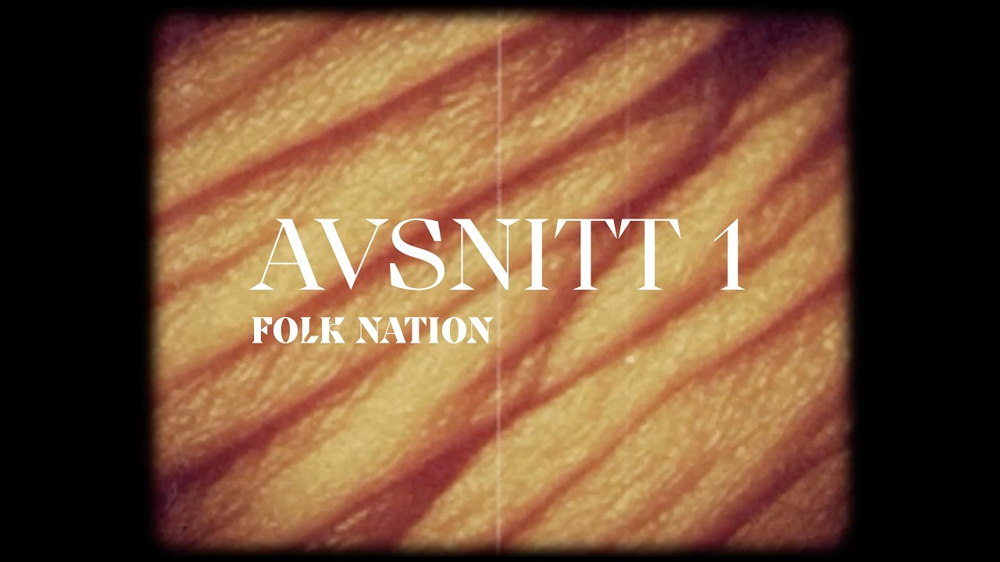

Actor · Screenwriter · Film producer
Jonathan
Silén
Jonathan Silén is a Swedish actor, screenwriter and film producer, nominated for a Guldbagge for best male actor. One foot in resistance to AI, the other in building it.
I — The actor
On stage and screen
Nominated for a Guldbagge, Sweden’s most prestigious film award, for best male actor.
In autumn 2027 Jonathan is at the Royal Dramatic Theatre in Stockholm.
Photo: Dramaten
II — The filmmaker
Push the Button
He co-founded the production company ÖGAT Film (Ögat AB). He writes screenplays, produces and acts, and is Guldbagge-nominated for best male actor.
Next: Push the Button, a feature he produced, about shutting down the internet to stop the algorithm. Premiering soon.
[Draft — hidden] Also in development: a documentary.
Still: Ola Kjelbye / Ögat Film
III — The critic & artist
One foot in resistance
Active in the Swedish movement warning about the risks of AI. He has presented on AI risk at the World Economic Forum.
With Frida Röhl at Folkteatern he makes Folk Nation.

Image: Folkteatern
IV — The builder
Tablå
Co-developed by Jonathan with Erik Rosales and Leonard Pauli. One AI-native system for theatres — replacing about twenty programs.
Lighting, schedule, marketing, tickets: planned and visualised together. An AI engine at the core, like a brilliant stage manager.
About
Both, at once
Jonathan Silén is a Swedish actor, screenwriter and film producer. Nominated for a Guldbagge, Sweden’s most prestigious film award, for best male actor. In autumn 2027 he is at the Royal Dramatic Theatre in Stockholm.
Through ÖGAT Film, the production company he co-founded, he produced the feature Push the Button. With Frida Röhl he makes Folk Nation at Folkteatern.
Active in the Swedish movement warning about the risks of AI — and a speaker on the subject at the World Economic Forum. With Erik Rosales and Leonard Pauli he co-develops Tablå, an AI-native platform for theatres.
Warning about the risks of AI.
Building one system for theatres.
Contact